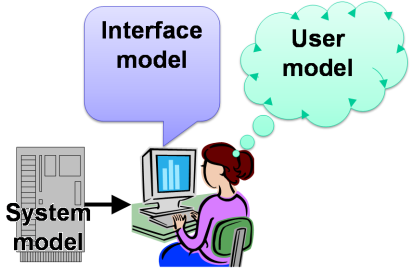

Oftentimes computers do harm people, making them suffer a lot.
Most of us think that the computer must be right and silently suffer mistreats like home banking systems.
Very few people has taken action, like for example this guy:

Althought many of us found his outburst encomiable, it was later proved that he was wrong.
The famous researcher Alfred E. Neuman devised the experiment that was going to be the ultimate proof. He ran the same program (not without a humongous development cost) in all different hardware platforms, attaining always the same result.
After years of effort he ruled: The hardware is innocent.
After some additional research, that took somehow less time than the previous stage, Neuman concluded that all applications are a combination of hardware and software. Given that the hardware was ruled out, then it was the software to be blamed.
He was unable to establish communication with the software but he noticed that the software did everything that the developer told it to do. The developer was the controlling mind, the brain!

The next obvious step was to communicate with the developer.
Neuman gave up after having tried for a long time.
The developer, even under the scrutiny of the most sensitive laboratory instruments available, would not show any reaction to words like user, user interface or even usability.
The developer was totally oblivious of the disaster he was provoking. He was not accountable.
Neuman found himself at a dead end.
He changed the perspective of the research, focusing now in the way applications were conceived and developed.
He discovered the impedance of the thre models. This means that in every interactive application there are three models involved.
- The user's mental model,
- the system's technical implementation model, and
- the UIs manifest model.

The mental model is what the user thinks of the real world things the application is about. For example, if the application is about purchasing music then the mental model is made up of the experience the user has accumulated by purchasing music in brick and mortar music shops.
The implementation model is made up of the things the developers use to build systems, like databases, programs, classes, methods, and all that geeky stuff. Normal people don't understand these features, the developers can't understand that the othrs don't understand.
The manifest model is the user interface, the way the system communicates with the human race members. Mostly always it's made up of screens displayed on a monitor, and receives input from a mouse or equivalent and a keyboard.
Developers usually design UIs aligned after the implementation model, the part of the system they love the most. The part of the system that normal people don't understand.
The discovery of Neuman was that, for an application to be usable, the manifest model ought to be designed after the user's mental model.
This ensures that the user and the system will understand each other. What is called intuituve despite the fact that it has nothing to see with instinct.

Neuman is now researching on how to find out the content of the user's mind.